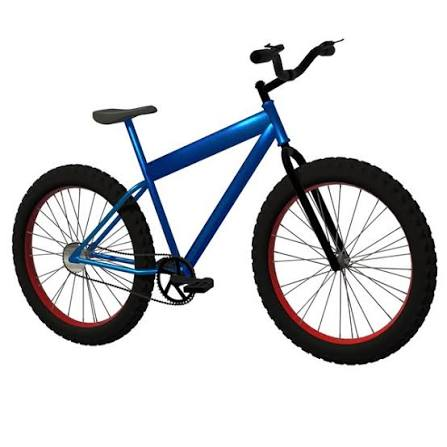

Bicycle Repairs
Learn how to solve common bicycle problems and keep your bicycle in good condition.

1. Flat Tyre
Problem: The bicycle tyre loses air and becomes flat.
How to fix it:
- Remove the wheel and inner tube.
- Find the hole and patch it, or replace the tube.
- Inflate the tyre to the recommended pressure.
2. Squeaky Chain
Problem: The bicycle chain makes noise when pedalling.
How to fix it:
- Clean dirt from the chain.
- Apply bicycle chain lubricant.
- Wipe away excess lubricant.
3. Weak Brakes
Problem: The bicycle takes longer to stop when the brakes are applied.
How to fix it:
- Check whether the brake pads are worn out.
- Check that the brake cables are properly connected.
- Replace worn pads or get the brakes adjusted by a professional.
Safety tip: Always test your brakes before riding. Never ride a bicycle with faulty brakes.